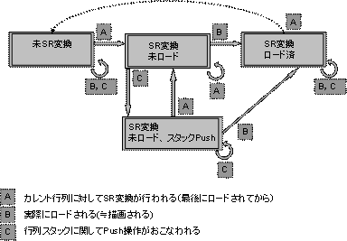

レンダラは、アフィンパラメータを節約するために、行列の状態を管理し、ロード回数を減らそうと試みます。 行列の状態は SR(スケール、回転)変換されていない SR(スケール、回転)変換されており、読み込まれていない SR(スケール、回転)変換されており、読み込まれていない。カレント行列がPushされた。 SR(スケール、回転)変換されており、読み込まれている。 に大別されます。
なし
2004/12/06 初版